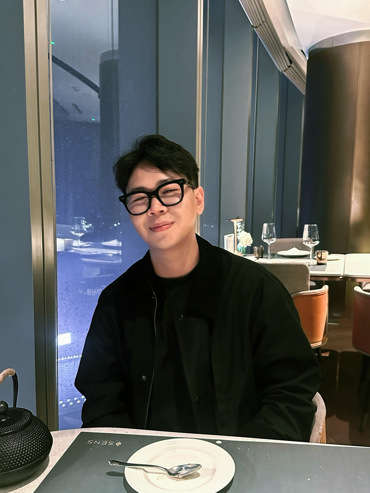

📍 Binh Duong, Vietnam
Managed the Vietnam market from North to South, providing post-sales support and technical service to customers. Delivered several industrial automation projects, including robotic grinding, laser cutting, and welding systems.

Robotics Engineer/ Computer Vision Engineer
Hi, I’m Chun-Ju Lee — but you can call me Steven. I graduated with a focus on Artificial Intelligence, especially CNNs and image processing. Although my studies were in AI, my current work is in the robotics field, where I’m gaining hands-on experience with industrial automation, control systems, and robot programming. I’m passionate about bridging intelligent software and practical engineering, and I’m continuously learning to build systems that make technology more capable and efficient.
Managed the Vietnam market from North to South, providing post-sales support and technical service to customers. Delivered several industrial automation projects, including robotic grinding, laser cutting, and welding systems.
Responsible for robot path planning, teaching motion trajectories, and developing robot algorithms to solve automation tasks such as grinding and deburring.
🌟 Thesis: Tool Wear Classification and Measurement Using Mask R-CNN
In charge of research and development in computer vision, focusing on machine learning and convolutional neural network (CNN) algorithms. Responsible for data acquisition and analysis using Python and libraries such as OpenCV, Tensorflow, Keras, NumPy, and Pandas.
A personal portfolio website introducing myself and highlighting my background and projects.
Implemented an ABB robotic system to automate the deburring process of aluminum workpieces, improving precision, efficiency, and consistency in post-machining operations.
Integrated five robots into a manufacturing line. The system includes one robot for pick-and-place operations, one for external grinding, two for internal deburring, and one for drilling holes in the workpieces.
Built a high-precision robotic laser cutting system with toolpaths generated by Robotmaster software, removing manual teaching and improving cutting accuracy and efficiency.
Implemented an ABB robotic system to automate the grinding of welded components, producing smoother and more consistent bicycle frames while reducing manual labor.
Developed a system using Mask R-CNN to detect tool wear.
Demonstration of using Convolutional Neural Networks (CNNs) to detect tool wear.
RobotMaster code post-processor website.
Using Python & Pytesseract to build a OCR for mold's serial number.